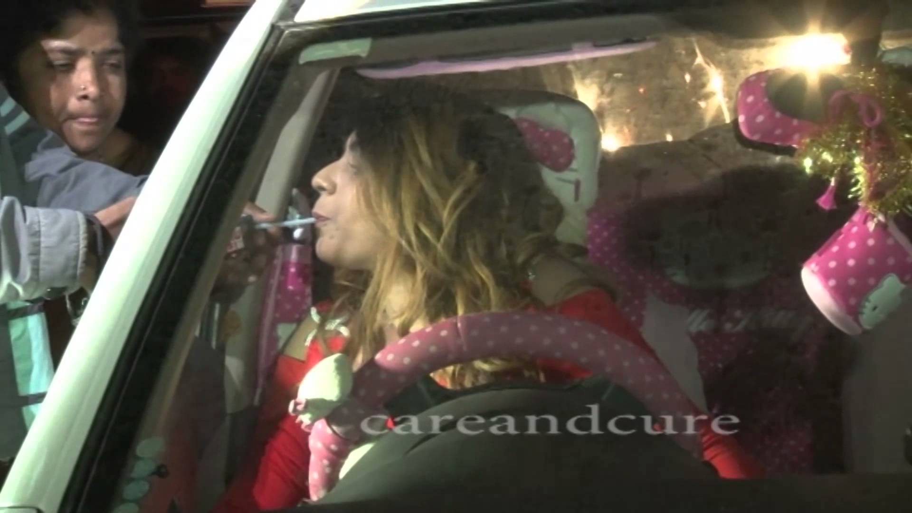
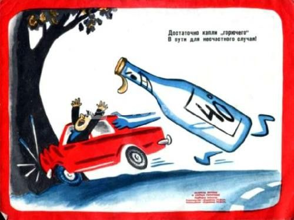

This is the 31st tobacco-related Surgeon General’s report issued since 1964. It describes the epidemic of tobacco use among youth ages 12 through 17 and young adults ages 18 through 25, including the epidemiology, causes, and health effects of this tobacco use and interventions proven to prevent it. Scientific evidence contained in this report supports the following facts:
We have made progress in reducing tobacco use among youth; however, far too many young people are still using tobacco. Today, more than 600,000 middle school students and 3 million high school students smoke cigarettes. Rates of decline for cigarette smoking have slowed in the last decade and rates of decline for smokeless tobacco use have stalled completely.
Tobacco use by youth and young adults causes both immediate and long-term damage. One of the most serious health effects is nicotine addiction, which prolongs tobacco use and can lead to severe health consequences. The younger youth are when they start using tobacco, the more likely they’ll be addicted.

Youth are vulnerable to social and environmental influences to use tobacco; messages and images that make tobacco use appealing to them are everywhere.
Tobacco companies spend more than a million dollars an hour in this country alone to market their products. This report concludes that tobacco product advertising and promotions still entice far too many young people to start using tobacco.
Comprehensive, sustained, multi-component programs can cut youth tobacco use in half in 6 years.
Drinking too much alcohol can take a heavy toll, not only on a person&rsquos health but also on his or her family relationships and work or school performance. Alcohol consumption can lead to alcohol dependence and abuse, contribute to a number of diseases and mental and behavioral disorders, and may lead to a range of injuries. In addition, drinkers and their families are subject to social harm, such as family disruption, problems at the workplace (including unemployment), criminal convictions, and financial problems. They also encounter higher health care and related costs.1,2
Drinking produces immense costs to society in terms of health care expenses, lost productivity, and lost years of lives. One of the most effective ways to lessen the costs associated with alcohol abuse and alcoholism is to prevent people from starting abusive drinking patterns. Because people drink for different reasons and under a wide variety of circumstances, prevention efforts must address an array of problems associated with that breadth of drinking experience.
This Alert explores some of the most effective prevention approaches in use today, aimed at a variety of groups—especially youth, their families, and the communities in which they live and work. It reviews laws and policies that can curtail access to alcohol or curb its use, protecting society as a whole and reducing the social, legal, and monetary costs of alcohol abuse and dependence.
High-risk drinking leads to considerable personal and societal harm both in the United States and around the world. Globally, for example, alcohol is the third-leading risk factor for premature death and disability.3,4 The costs associated with alcohol use amount to 1 to 3 percent of the gross domestic product in high-income countries.1 In the United States, the estimated costs of alcohol abuse were $223.5 billion in 2006.5 Drinkers and their families pay only a portion; instead, nearly 60 percent of these costs fall to the government and others in society.5 More than 70 percent of the total costs were attributed to lost productivity.6
In the United States, in 2007, roughly 9 percent of full-time workers overall reported heavy alcohol use (five or more drinks on the same occasion on 5 or more days in the past 30 days), and 30 percent reported binge drinking (i.e., consuming five or more drinks on the same occasion at least once in the past 30 days).7 According to a national survey, this type of alcohol abuse causes absences from work, accidents, and worker productivity losses.8 It is estimated that 15 percent of the U.S. workforce, or about 19.2 million workers, consume enough alcohol to lead to workplace impairment.8
In addition to the enormous impact of adult alcohol abuse, costs associated with the consequences of underage drinking are estimated at $62 billion per year.9

What Is High-Risk Drinking?
Sometimes simply knowing what risky drinking is can help people to recognize and curb their unhealthy drinking patterns. To better define high-risk and low-risk drinking, the National Institute on Alcohol Abuse and Alcoholism (NIAAA) developed specific guidelines: Low-risk drinking is considered to be no more than 14 standard drinks per week (4 per day) for men and 7 standard drinks per week (3 per day) for women. 10 By publicizing these low-risk drinking limits, NIAAA hopes to raise awareness of the risk for alcohol-related harm and to prevent some of the problems that result from risky drinking.11
When providing healthy-drinking guidelines is not enough to stop harmful drinking, a next step is to target specific groups with focused prevention messages.
Prevention Programs for Youth
Alcohol remains the drug of choice among America’s adolescents, with rates of current (i.e., past 30-day) use that are more than double those of cigarette smoking and rates of annual use that far exceed the use of marijuana and other illicit drugs.12,13 Because drinking is so pervasive in this group, underage alcohol use has proven to be even more difficult to prevent than other drug use.12 Providing young people with tools they can use, such as ways they can say no to drinking, and changing their family or community dynamics can help prevent or at least delay their alcohol use.14
School-Based Interventions
School is a chief part of most young people’s lives and, as such, provides a critical setting for prevention and intervention efforts. Effective programs (see table 1) include elements that:12–16